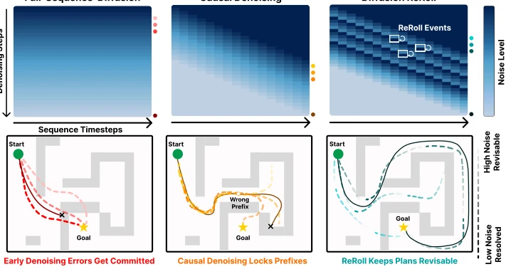
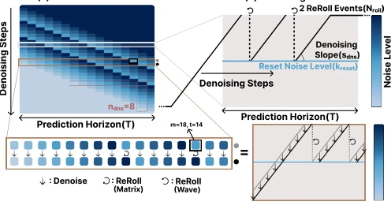
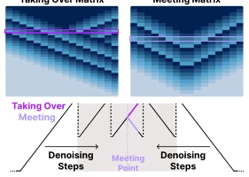
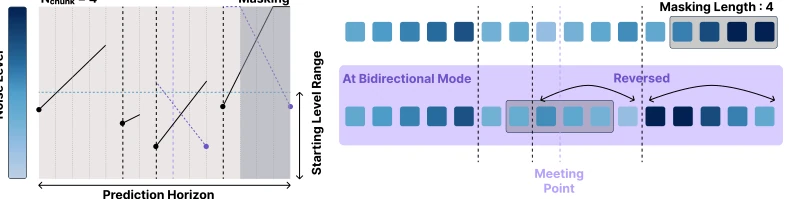
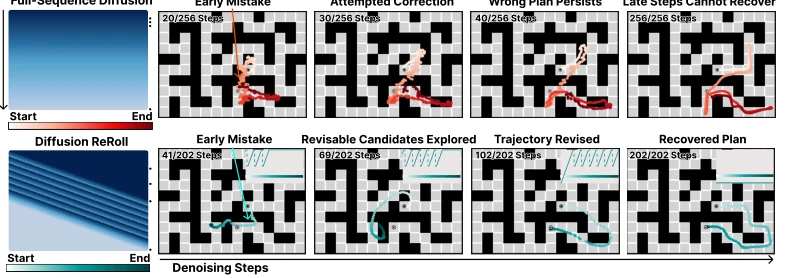
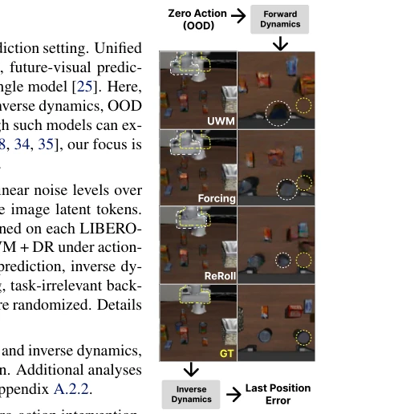
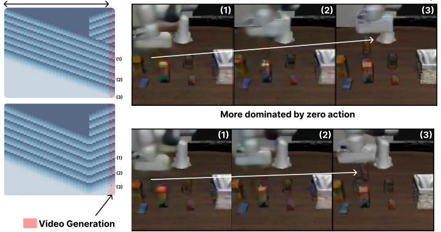
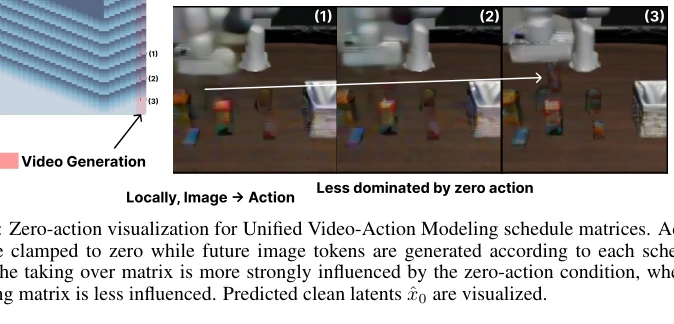
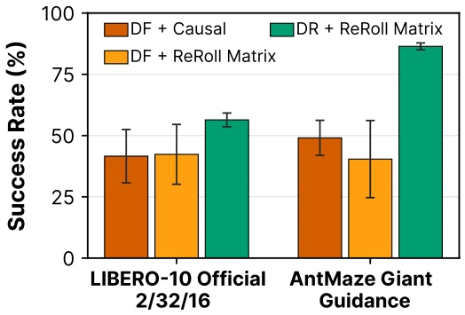
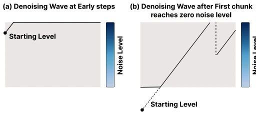

This paper adds a "do-over" mechanism to diffusion models, which is quite interesting. Traditional diffusion either proceeds blindly along the full sequence [6], or advances causally and unidirectionally like Diffusion Forcing [14], making early errors difficult to correct. ReRoll's core maneuver is "re-noising after local stability", allowing preceding and succeeding segments to mutually correct. This approach indeed works well in simulation, with success rates surging on Maze and LIBERO. But do not celebrate too early; it remains a simulation toy, not deployed on real hardware, and hyperparameters (slope, reset noise) still require tuning, adding a new pit for "hyperparameter tuning experts". However, turning the diffusion process itself into a revision interface is much more elegant than external repair modules [19], at least without modifying the backbone network.
Sequence prediction for embodied intelligence (video, planning, policy) cannot do without diffusion models [1, 2, 4]. But standard full-sequence diffusion [6] shares noise levels, making temporal dependency difficult to control; Diffusion Forcing [14] although introduces per-token noise, is typically causal denoising, and once early errors are locked (Locked Prefix), they are hard to be corrected by subsequent information [14]. Previous revision methods mostly rely on external modules (such as inpainting [16] or repair [19]), failing to solve the problem of "when to revise and where to revise". The motivation of this paper is: Can the diffusion denoising process itself possess revisability? Utilizing randomness during training as inductive bias, achieving mutual correction across timesteps through structured noise patterns, avoiding premature commitment to erroneous predictions.
The core is the Schedule Matrix framework. Unlike full-sequence shared noise, it defines a matrix S, specifying the noise level for each token at each denoising step. The innovation lies in "Linear Chunks": virtually dividing the trajectory into piecewise linear noise patterns. During training, these chunks are randomly sampled to let the model adapt to structured noise. During inference, when the edge of a certain chunk reaches the reset noise level (kreset), a ReRoll event is triggered, re-noising that area (Re-noise), enabling it to utilize context from other parts of the sequence for further optimization. This achieves iterative cross-timestep revision. Parameters include denoising slope (sdns), reset noise level (kreset), and ReRoll event count (Nroll). Supports bidirectional scheduling (Meeting/Taking Over), allowing information flow to be constrained from both ends. No need to modify the backbone network, only per-token noise conditioning is required.
On OGBench (PointMaze/AntMaze) [23] planning tasks, ReRoll shows significant improvement over Diffusion Forcing [14] and Diffuser [6] (e.g., AntMaze Giant planning success rate rises from 72.8% to 88.1%). In LIBERO-10 [24] policy learning, it improves by 56.5% compared to Diffusion Policy [4]. In Unified Video Action Model (UWM) [25], OOD robustness and action-video consistency (Zero-Action Error) are also optimal. Ablation studies show that increasing ReRoll event count usually improves performance until saturation, and reset noise level needs to be moderate. However, RoboCasa single task improvement is not as obvious as multi-task, speculated due to narrow behavior distribution.
其他图片Other Figures

Figure 1: Comparison of full-sequence diffusion, causal denoising, and Diffusion ReRoll. ReRoll events enable cross-horizon revision, preventing premature commitment to erroneous predictions.

Figure 4: Representation of Diffusion ReRoll with (a) Schedule Matrix and (b) Denoising Waves.

Figure 5: Two bidirectional sched- ule matrices are shown with de- noising wave representation.

Figure 6: Training with randomized linear noise-level chunks. We sample piecewise-linear noise profiles with random chunk numbers, chunk slopes, starting noise levels, and masking length. Bidi- rectional mode requires additional modifications.

Figure 8: Denoising process of Diffuser and Diffusion ReRoll are shown. Diffusion ReRoll keeps trajectories revisable, enabling recovery from early planning errors. Goal-directed guidance is used for planning on AntMaze Giant. Predicted clean trajectories ˆx0 are visualized.

Figure 9: Procedure of zero action experiment and generated last scene images are visualized.

Figure 12: Zero-action visualization for Unified Video-Action Modeling schedule matrices. Action tokens are clamped to zero while future image tokens are generated according to each schedule matrix. The taking over matrix is more strongly influenced by the zero-action condition, whereas the meeting matrix is less influenced. Predicted clean latents ˆx0 are visualized.

Fig. 12 further visualizes how the two matrices induce different cross-modal information flow. This diagnostic is separate from the quantitative zero-action intervention in the main experiments. Here, we clamp the action-token values to zero but keep their noise levels following the schedule matrix, and then generate the future image tokens. With the taking over matrix, later denoising is more locally action-to-image, so the generated video is strongly pulled toward the zero-action behavior. With the meeting matrix, image-side context remains active through bidirectional revision, making the generated future images less dominated by the zero-action condition. This illustrates that ReRoll schedule matrices can control whether information flows primarily from actions to images or from images

Figure 15: Importance of linear-chunk training. A ReRoll schedule matrix is most effective when the model is trained with structured linear noise chunks.

Figure 16: First-chunk noise assignment. Later chunks start from the reset-level range, while the first chunk uses a wider starting-offset range to cover both high-noise initial states and clean-prefix states.